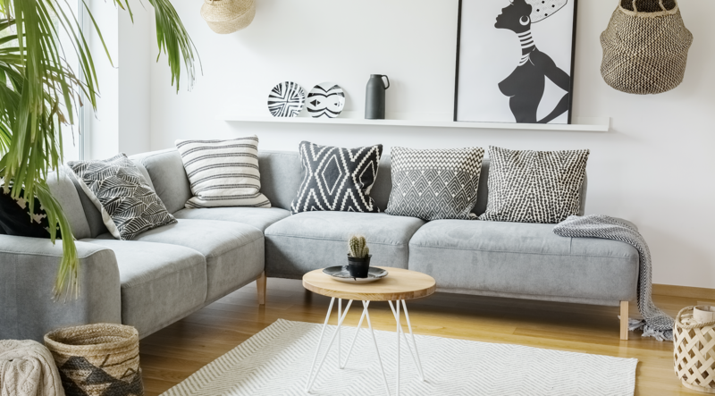

Quiénes somos

BOHOUSE es un blog de moda y decoración bohemia creado para los amantes de la cultura el arte y las tendencias. Nuestro objetivo en este blog es acercarte las novedades más relevantes del estilo boho. Para ello analizamos a fondo el estilo bohemio y te traemos ideas y consejos para adaptarlo a tu vida con estilo. Buscamos, seleccionamos y filtramos los mejores artículos de decoración estilo bohemio para ti.
 Instagram
Instagram
 Facebook
Facebook
DECORACIÓN VINTAGE CON ESE PUNTO CHIC QUE NOS ENCANTA.
Actualmente el estilo Bohemio es una tendencia muy valorada y extendida que abarca conceptos muy amplios relacionados con el urban lifestyle, desde moda, decoración e interiorismo hasta la cultura en todas sus manifestaciones. Como ya habrás podido apreciar, no se trata de una estilo sin más: Hablamos de una forma de entender la cultura, el arte, la naturaleza, la música, el cine… una forma de entender la belleza. BOHOUSE&Co